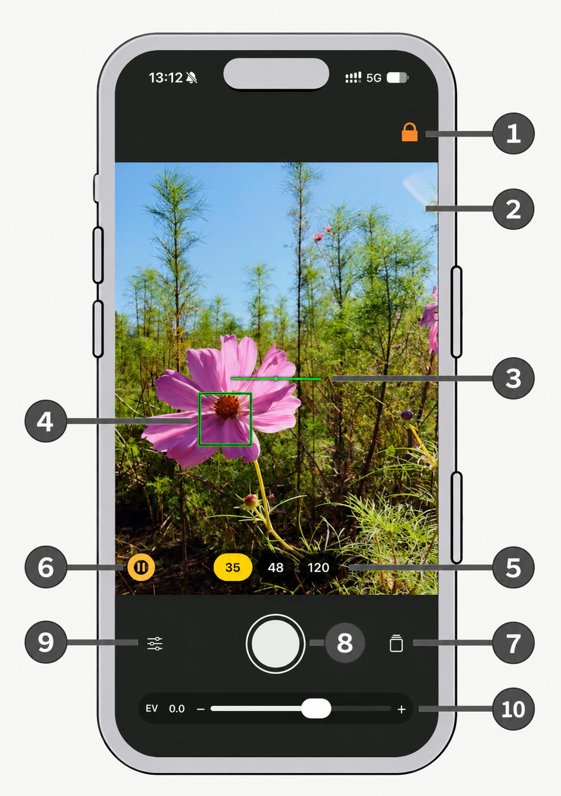
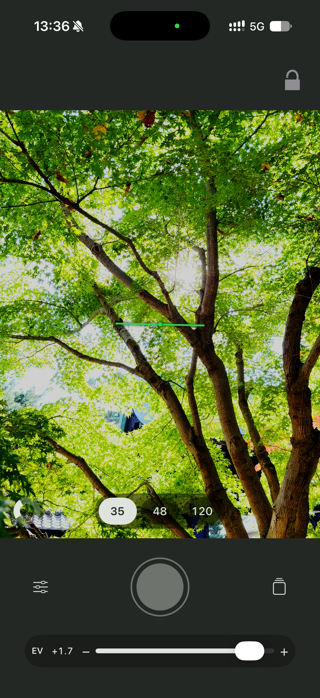
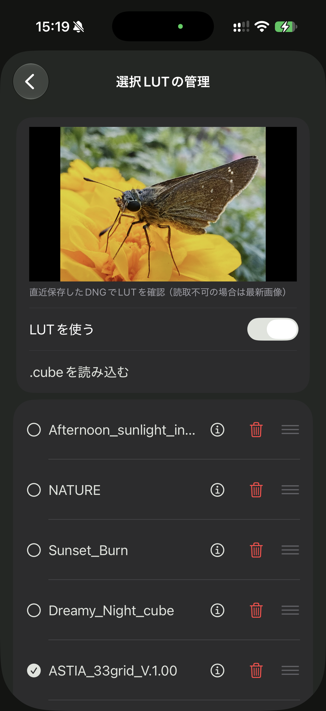
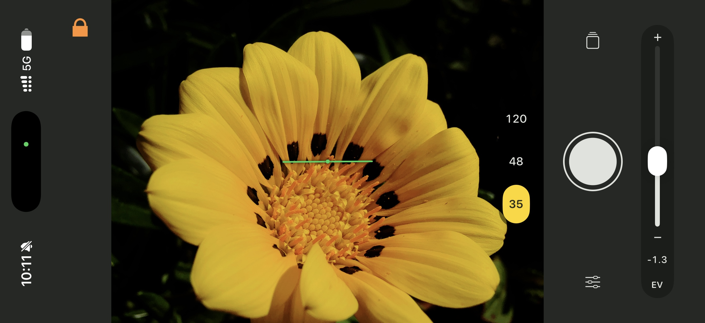
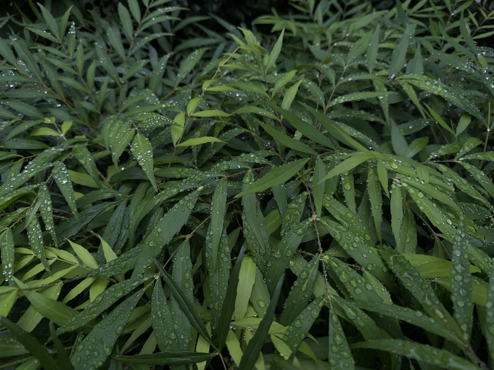
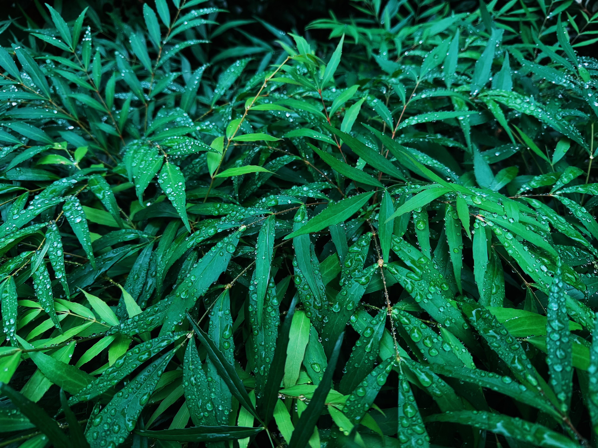
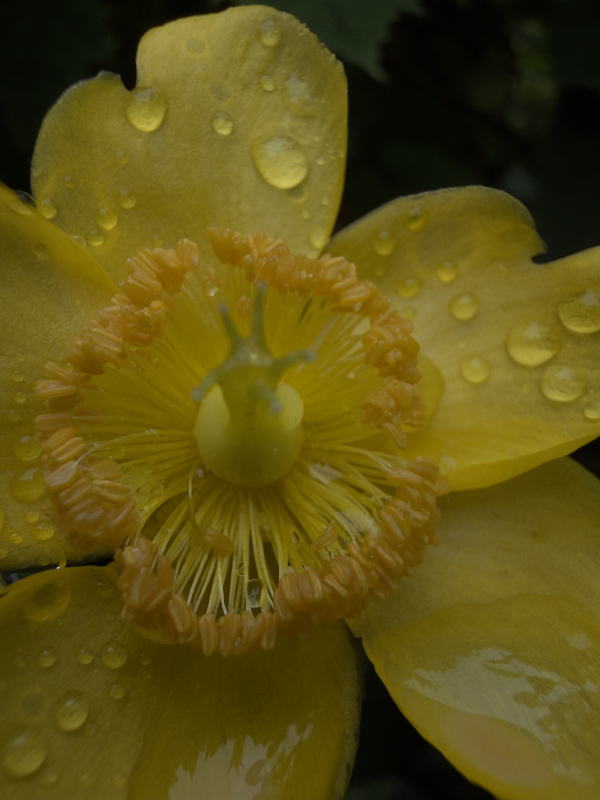
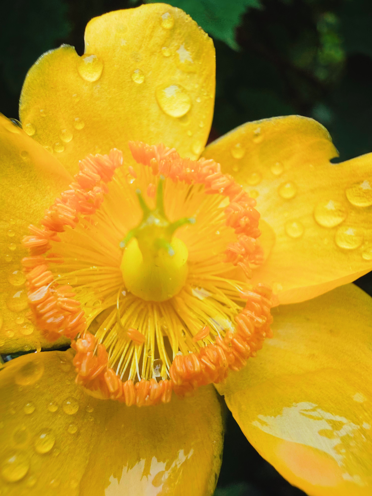

どんなアプリ？
egcamera は写真の色味を変える LUT を選び、その効果をファインダーで確認しながら撮影するアプリです。LUT 適用済みの HEIC（HEIF 形式）を保存し、「RAWの保存」をオンにすると、後で編集できる LUT 未適用の Apple ProRAW DNG も残せます。RAW と LUT の設定によって、保存する写真は次のように変わります。
| RAWの保存 | LUT | 保存する写真 |
|---|---|---|
| オン | 選択・有効 | LUT 適用 HEIC ＋ LUT 未適用 DNG（独立した2枚） |
| オン | 未選択・オフ | DNG のみ |
| オフ | 選択・有効 | LUT 適用 HEIC のみ |
| オフ | 未選択・オフ | LUT 未適用 HEIC のみ |
HEIC は iPhone が生成した処理済み画像を元にし、DNG をアプリ内で現像した画像ではありません。Apple ProRAW もセンサーの未処理 RAW とは異なります。RAW オフでは DNG を生成・保存しません。
HEICの保存色空間はsRGB・10bit（既定）とDisplay P3・10bitから選べます。「HDRを使用」はHEICの保存に適用します。撮影元に利用できるHDR情報があれば、HDRゲインマップを付けて保存します。なければSDRで保存し、そのことを通知します。「HDRを使用」がオフのときはSDRで保存します。ファインダーとLUT見本はDisplay P3のSDRで表示します。これらの設定はDNGに影響しません。RAWとHDRは初期状態でオンです。
動画、Live Photos、ポートレート、ナイトモード相当の撮影には対応していません。
主な機能
- 対応範囲内の3D
.cubeLUT を読み込み、複数保存できます。選択した LUT をファインダーと完成 HEIC に適用します。グリッドは「グリッドなし」（初期値）・三分割法・レイルマン構図から選べ、保存画像やLUT見本には入りません。 - 撮影画面の「35 / 48 / 120」で画角を切り替え。設定には「13 / 24 / 24 接写 / 35 / 48 / 120 mm 相当」があり、起動時は通常の35 mmです。mm は換算画角の目安で、実画角の校正は継続中です。
- 選択中の35 / 48 / 120ボタンを再タップすると、白い通常モードから黄色の接写へ、さらにタップすると通常へ戻ります。別の画角を選ぶ場合や大きな構図変化を検出した場合も通常へ戻ります。24 mmの接写は設定から選びます。
- 通常の13 mmは超広角、24 / 35 / 48 mmはメイン、120 mmは望遠を使用します。接写の24 / 35 / 48 mmは超広角、120 mmはメインのクロップです。対応する最大解像度での撮影を要求しますが、クロップや撮影条件で実画素数は下がり、すべての条件で48 MPになることを保証するものではありません。
- 露出補正（−3〜＋2 EV）、フラッシュ、3秒／10秒タイマー、水平器に対応しています。ファインダーをタップすると、その位置で一度ピントを合わせて保持します。再タップで更新し、最長10秒・大きな構図変化・画角や接写の変更・ロック中の鍵のタップで継続 AF に戻ります。灰色の鍵をタップすると、再AFせず現在のピントを保持します。露出は自動を維持します。
- 画面輝度はiPhoneの通常制御と利用者の設定に任せ、最大化・固定・退出時の復元は行いません。物理レンズの切替時は約0.18秒の軽いフェードを行います。「視差効果を減らす」が有効ならフェードを省きます。
- カメラコントロールからの起動と、カメラコントロール・音量調節ボタンでのシャッター操作に対応。ロック中は LUT や通常設定を使わず DNG を撮影し、「LUT撮影へ」から認証して通常アプリへ移ります。ロック中の撮影・保存は個別の実機確認を継続しています。
撮影画面の名称と操作
画像は旧バージョンの番号付き説明図です。現在は⑦がLUT管理に変わり、⑦と⑨の配置も入れ替わっています。縦持ちでは左が⑦LUT管理、右が⑨撮影設定で、横持ちでは上が⑨、下が⑦です。以下では同じ番号で現在の操作を説明します。画像はクリックすると拡大できます。

- フォーカスロックインジケーターオレンジの鍵はフォーカス保持中、灰色の開いた鍵はオートフォーカスです。灰色の鍵をタップすると現在のピントを再AFせず最長10秒保持し、オレンジの鍵をタップすると解除します。
- ファインダー構図と選択した LUT の効果を確認する画面です。撮影範囲は4:3、表示は SDR です。
- 水平器端末の傾きを確認できます。水平になると緑色になり、その状態が3秒続くと消えます。床や空に向けた撮影にも対応します。
- マニュアルフォーカスポイントタップして指定したピント位置を緑の枠で1秒表示します。指定位置で一度オートフォーカスを行い、最長10秒保持する「タップAF」です。ピント距離を手動で調整する機能ではありません。
- 画角スイッチ（接写モード切替）35 / 48 / 120 mm 相当を選びます。選択中のボタンを再タップすると白の通常モードから黄色の接写へ切り替わり、もう一度で通常に戻ります。
- 保存インジケーター撮影・画像処理・保存中はリングが回転します。端末の負荷・高温・省電力などによる保存待ちが連続3秒続くと、アンバー色の一時停止マークになります。待機解除を判定すると回転を再開します。表示中も、シャッターが有効なら追加撮影できます。
- LUT管理（旧図は写真ライブラリ）現在は3つの重なる円から独立したLUT管理を開きます。旧図の写真ボタンは置き換わっています。保存済み写真の確認・管理は「写真」アプリで行えます。
- シャッターボタン指を置いた時点で撮影を受け付けます。未準備・レンズ切替・LUT 読込中や処理枠が満杯の間はグレーになり、撮影できません。
- 設定画角、グリッド、フラッシュ、タイマー、露出補正の基準値、RAW・HDR・HEICの保存、保留画像や撮影診断を確認できます。LUTの読み込み・選択は⑦のLUT管理から行います。
- 露出補正スライダー−3〜＋2 EV を1/3段ずつ調整します。トラックのタップでその位置へ移動し、スワイプや−／＋でも調整できます。トラックやポインタのダブルタップで、設定した基準値（初期0.0 EV）へ戻ります。整数EVへスワイプで移ったときだけ軽い触覚を返し、単なるタップ・リセット・−／＋では追加しません。
側面のボタンでも撮影できます。 iPhone のカメラコントロール、音量を上げる／下げるボタンは、撮影画面でシャッターが有効なときに押し始めを受け付けます。タイマー設定時はカウントダウンを開始します。
⑥は状態表示で、タップして保存を止めるボタンではありません。撮影中と撮影終了後2秒は自動保存を待ちます。保存の失敗や写真追加の権限の拒否、アプリを開いて許可する必要がある場合など、保存ワーカーが停止して未保存の写真が残ると、一時停止表示になります。保留の理由と再保存は「設定 → 保存の保留中」で確認できます。
基本的な使い方
- アプリを開き、カメラの使用を許可します。写真への追加権限は最初の保存時に求められます。
- 「LUT管理 → 読み込むLUTの入力」で、使う LUT に合う入力を選びます（初期値は F-Log2C / F-Gamut C）。続いて「.cubeを読み込む」で追加し、使う行をタップして「LUTを使う」をオンにします。入力は各行の情報ボタンから確認・修正できます。ファイル.appで.cubeのプレビューを開き、共有からegcameraへ渡す方法もあります。Web URLの共有やZIPの展開には対応しません。
- 撮影画面で構図と画角を決め、必要に応じて露出を調整してシャッターを押します。EV スライダーのトラックやポインタをダブルタップすると、設定した基準値へ戻ります。RAW・HDR・HEICの保存設定も撮影前に確認してください。
- 撮影後は「写真」アプリで保存された画像を確認します。リングが回転中なら撮影・処理・保存中、アンバー色の一時停止マークなら保存の保留中です。シャッターが有効なら追加撮影できます。保留の理由は「設定 → 保存の保留中」で確認し、失敗した写真は「保留画像を再保存」から再試行します。手動再保存でも撮影中・高温の待機は維持し、省電力による待機だけを解除します。
撮影設定とLUT管理は分かれています。LUT管理を開くと、見本のために写真の読み取り権限も求められます。見本には直近保存した DNG を使い、読めない場合は許可された最新写真を使います。見本は表示専用で、保存済み写真を変更しません。許可しなくても、カメラと追加保存の権限があれば撮影できます。

「35／48／120」で画角を選び、EVスライダーで明るさを調整します。画像は旧配置で、現在は左がLUT管理、右が撮影設定です。撮影するときは中央のシャッターを押します。

読み込み・選択・削除・並び替えを行います。チェック付きの行が選択中の LUT です。ⓘ から入力を確認・修正できます。現在は独立したLUT管理から操作し、よく使うLUTを直近5件表示します。見本・「LUTを使う」・読み込みボタンは固定され、一覧だけをスクロールします。入力はLUT管理上部のボタンから選びます。

横持ちでは数字とアイコンが端末の向きに合わせて回転します。画像は旧配置で、現在の撮影設定は上、LUT管理は下にあります。黄色の35は接写、オレンジの鍵はフォーカス保持中を示します。写真は撮影時の向きで保存します。画面写真はクリックすると拡大できます。
LUT の追加と入力設定
新しい LUT は未選択で一覧の先頭に追加され、既存の選択は維持されます。同じファイル名の LUT は内容が違っても追加せず、登録済みの LUT を先頭へ移します。別名でもファイル内容が完全に一致すれば追加せず、既存項目を先頭へ移して今回の名前に変更します。既存の入力・選択・オン／オフは変わりません。同名の更新版に置き換えたい場合は、別名で読み込むか、既存の項目を削除してから読み込んでください。
読み込み時にファイル内の入力記述・TITLE・元ファイル名を解析し、特定できる場合は対応する入力を登録します。一般的な情報不足では事前に選んだ入力を使いますが、明示されたsRGB／Display P3の色条件に矛盾や非対応の指定がある場合は拒否します。読み込み用の入力変更は登録済み LUT を変えません。登録後の入力は各行の情報ボタンから確認・修正できます。取り込み中・待機中は合計8件、1ファイル32 MiB、取り込み用コピーの合計64 MiBまでです。超過や取得・保存の失敗は案内し、元ファイルは変更・削除しません。
上の3枚は2026年10月12日に利用者から提供された当時の実画面です。現在のサテングラファイトの背景、LUT管理と撮影設定の分離・配置、EVの固定目盛りとは異なります。LUT 一覧の名前は登録例です。各 LUT の推奨入力は配布元で確認し、ⓘ から登録入力を確認・修正してください。
撮影サンプル：LUT あり／なしを比較
中央のバーを左右にドラッグすると、同じ構図の写真を重ねて比較できます。左側が「LUT あり」、右側が「LUT なし（RAW 現像）」です。スマートフォンでは指で左右に動かせます。キーボードでは Tab で比較画面を選び、左右の矢印キーで調整できます。
LUT ありは egcamera で LUT を適用して撮影した写真、LUT なしは LUT 未適用の RAW から現像した写真です。現像処理による違いも含む、実際の撮影結果の比較です。作例は2026年9月30日に提供され、その後の入力変換・HDR・ファインダーの改良前に撮影されたものです。現行版の色や画質の検証結果を示すものではありません。
緑の葉（CLASSIC Neg.）
使用 LUT：FLog2C_to_CLASSIC-Neg._33grid_V.1.00.cube


黄色い花（ARRI LogC4 → Rec.709）
使用 LUT：ARRI_LogC4-to-Gamma24_Rec709-D65_v1_33.cube


試してみたい LUT サンプル
色づくりを試す候補として、次の4種類を紹介します。配布元の利用条件と入力形式を確認し、ZIP を解凍して中の .cube ファイルを使います。現行版は Sony の S-Log3 / S-Gamut3.Cine 入力にも対応しています。
現在の入力設定は「Display P3」「sRGB」「F-Log2C / F-Gamut C」「ARRI LogC4 / AWG4」「S-Log3 / S-Gamut3.Cine」「CINE2 / Pro（近似・試験用）」です。Display P3はP3からP3へ変換するSDR・full rangeのLUT用で、eglutの出力もこの条件に当たります。LUT ファイルの読み込み対応と、配布元が想定した色の再現は別です。以下の入力条件も確認して選んでください。
FUJIFILM の CLASSIC Neg.
FUJIFILM の 3D-LUT 配布ページで「GFX ETERNA 55」の「Download」を選び、gfx-eterna-55-3d-lut-v110.zip を解凍します。
FUJIFILM のフィルムシミュレーション紹介ページでは、フィルムシミュレーションごとの作例と特徴を紹介しています。色味を選ぶ参考になりますが、egcamera で同じ仕上がりを保証する作例ではありません。
gfx-eterna-55-3d-lut-v110 / 33Grid / F-Log2C / FLog2C_to_CLASSIC-Neg._33grid_V.1.00.cube
読み込む前に入力を「F-Log2C / F-Gamut C」にします。現行版は線形 sRGB から F-Gamut C への色域変換と公式 F-Log2C 曲線を使用します。iPhone の処理済み画像を元にするため、富士フイルム機の色や Log 撮影のダイナミックレンジを再現するものではありません。
Sony の Dreamy Night
Sony の「Color of CINEMA」LUT 配布ページから、Y2氏の「Dreamy Night」を入手できます。My Sony ID の登録・ログインが必要です。
LUT DOWNLOAD → Y2 → Dreamy Night → ダウンロード → 02_Dreamy_Night_cube.zip → 02_Dreamy_Night_cube.cube
ほかのクリエイターの LUT も「LUT DOWNLOAD → 各 LUT の『詳細を見る』→ 無料ダウンロード → My Sony ID にログイン」から .cube ファイルをダウンロードできます。
公式作例の入力は S-Log3 / S-Gamut3.Cine です。現行版は線形 sRGB から S-Gamut3.Cine への色域変換と Sony 公式 S-Log3 曲線に対応しています。読み込む前にこの入力を選んでください。手元の Dreamy Night 本体は33³・RGB 値0〜1で、アプリのパーサー条件を満たすことを確認しています。ただし入力情報が含まれず自動解析では判定できないため、手動指定が必要です。登録済みなら情報ボタンから変更できます。iPhone の処理済み画像を元にするため Sony カメラの色やダイナミックレンジを復元するものではなく、実機での仕上がりは未検証です。
配布元はダウンロードした本人の個人利用に限る旨と、商用利用・SNSでの拡散を控える旨を案内しています。利用条件は配布ページで確認してください。
ARRI の LogC4 → Rec.709
ARRI の LUT 配布ページの「Downloads」から「LogC4 LUT Package」を開き、「DOWNLOAD」で入手した ARRI - LogC4 LUT Package_data.zip を解凍します。ページ内の LUT Generator は LogC3 用なので、LogC4 は配布パッケージを使います。
ARRI_LogC4_v1-1_LUT_Package / LUTs / ARRI_LogC4-to-Gamma24_Rec709-D65_v1_33.cube
読み込む前に入力を「ARRI LogC4 / AWG4」にします。公式の LogC4 伝達関数と AWG4 色域変換を使用しますが、iPhone の処理済み画像を元にするため、ARRI カメラの色や Log 撮影のダイナミックレンジを再現するものではありません。
AUXOUT の SAGAMI
AUXOUT の「FREE SAGAMI LUT」配布ページで金額を「0 USD」にして「Add to cart」へ進みます。入手手続きを完了し、受信したメールの案内から SAGAMI.zip をダウンロードして解凍します。
SAGAMI.zip → SAGAMI.cube
配布元のテスト条件は Sony a6300 の CINE2 / Pro です。読み込む前に入力を「CINE2 / Pro（近似・試験用）」にします。Sony の公開基準点に基づく試験近似で、CINE2 の厳密な式や Pro の色変換を再現するものではありません。実際のプレビューで仕上がりを確認してください。
これら以外の .cube 形式の3D LUT も認識・読み込みできます。 現行版で読み込める条件は次のとおりです。
- 文字コード：UTF-8
- 格子サイズ：2〜65
- RGB値：0〜1の有限値
- データ行の数：格子数の3乗と同じ
LUT_3D_SIZEはデータ行より前に一度だけ指定します。入力範囲を指定する場合は、DOMAIN_MIN 0 0 0とDOMAIN_MAX 1 1 1の組み合わせに限ります。指定がないファイルも読み込めます。範囲外の値や未対応のヘッダーを含むファイル、および1D LUTは読み込めません。
コメント、TITLE、元のファイル名などから入力を解析します。TITLEやファイル名を根拠にした場合は推定として表示します。RGBの数値やDOMAINだけでは入力を決めません。一般的な情報不足では事前に選んだ入力を使い、登録後も情報ボタンで確認・修正できます。明示されたsRGB／Display P3の入出力・伝達関数・範囲などに矛盾や非対応の指定がある場合は、既定入力へ読み替えず拒否します。対応形式であっても、意図した色の再現を保証するものではありません。
配布ページは2026年10月9日に確認しました。SonyのZIP名と中のファイル名は利用者から共有された手順に基づき、ログイン後のZIP内容は今回確認していません。FUJIFILM・ARRI・AUXOUTのZIP内のパスは2026年9月30日時点の案内です。LUT 本体はこのページでは再配布していません。
開発状況と対応範囲
現在は開発中で、一般公開・配布はしていません。 iOS 26 以降の iPhone 16 Pro / 16 Pro Max が対象です。今後の機種や機能の対応は検証後に決めます。
2026年11月14日に、READMEと現行仕様の処理版「2026-11-08.3」を照合しました。Display P3 LUT、HEICのsRGB／Display P3・10bit選択、独立したLUT管理、露出基準値、鍵からのフォーカス保持に対応しています。Version / Build は0.1.0 / 1です。RAW撮影では対応する構成で、最初の撮影の露光完了後にAppleの処理待ちが続き、撮影・保存の枠に空きがある場合、追加押下で速度優先の2枚目を受け付けます。そのときはシャッター外周が緑になります。タイマー撮影は対象外です。
過去の2026-10-12.1には、署名なし iOS Debug / Release のビルド成功とMacでの自動検証6,650件の記録がありますが、現在の処理版の試験結果とは区別しています。写真ライブラリへの追加は模擬処理による検証です。今回の紹介更新ではアプリのビルドや実機試験を行っていません。iPhoneでの色・画質・HDR・解像度・保存・長時間負荷、16 Pro Max、ロック中の撮影は個別の継続確認が必要です。
利用者からは以前のバージョンで、iPhone 16 Proの基本撮影・LUT読み込み・DNG保存・カメラコントロール起動を確認したとの報告があります。10月9日の当時の輝度・LUT一覧・レンズフェード・近距離警告、10月10日の即時シャッターにも良好との報告があり、10月11日朝には長時間スリープ後の復帰問題が再現しなくなったとの報告を受けています。輝度の最大化はその後に廃止しています。条件や試行回数は未提示で、現在の全機能確認や復帰問題の恒久的解消を示すものではありません。
「離れてください」は AF の状態とフォーカス点周辺の画像から近距離での合焦不足を推定する案内です。望遠では一度出た警告を、極端な接近で画像を判定できなくなっても、回復を確認するまで維持します。暗所・無地では案内が残ることがあります。現在の被写体距離を測る機能や、画像全域のピントを完全に判定する機能ではありません。警告中も撮影できます。
F-Log2C / F-Gamut C、ARRI LogC4 / AWG4、S-Log3 / S-Gamut3.Cine は公式曲線と色域変換、CINE2 / Pro は近似・試験用です。iPhone の処理済み画像に LUT を適用する方式で、メーカー固有の色や Log 撮影のダイナミックレンジを復元するものではありません。旧sRGB／Log LUTの出力解釈は維持し、Gamma 2.4などをsRGBへ厳密に再エンコードする処理はありません。Display P3 LUTの対応とは区別しています。選択した LUT の読み込み・適用に失敗した場合はエラーを表示し、無加工の撮影へ自動では戻りません。
番号付きの操作説明図は2026年10月11日提供の画像から作成しました。使い方の3枚は2026年10月12日提供の当時の実画面です。撮影比較作例は2026年9月30日提供の資料で、現在の色・画質の検証とは区別しています。